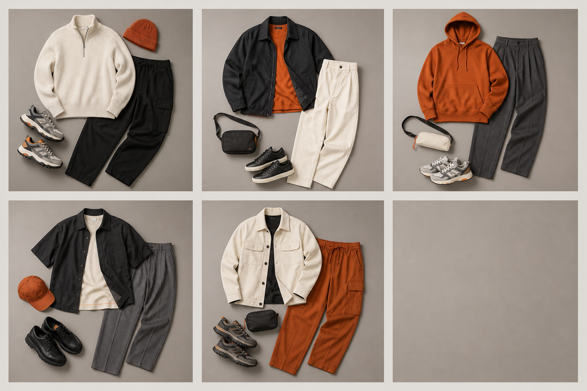

LOOK / 01
CALM ROUTE 01
米白针织、黑色长裤与灰色鞋履构成柔和但清晰的通勤概念组合。
首页 / 商品分类 / 穿搭系列
五组虚构概念造型把鞋履、服装与配件组合成完整方向，帮助访客快速理解 NOVA STEP 的搭配语言。
05 CONCEPT LOOKS
米白针织、黑色长裤与灰色鞋履构成柔和但清晰的通勤概念组合。
黑色外层包围暖橙内搭，以米白长裤平衡色彩，形成醒目的城市造型。
暖橙上装与深灰长裤建立强弱对比，鞋履和小包延续轻量日常方向。
黑、米白和暖灰分层组合，加入橙色帽款作为小面积视觉落点。
米白外套搭配暖橙长裤和深色内层，呈现轻快但稳定的完整造型概念。